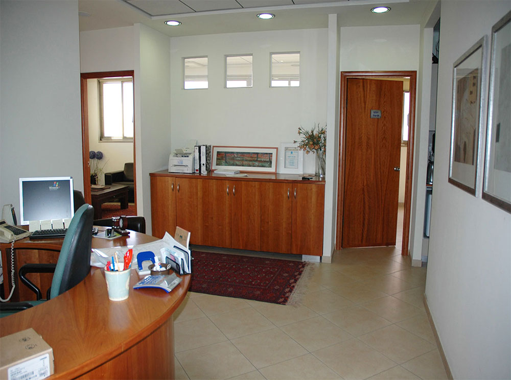
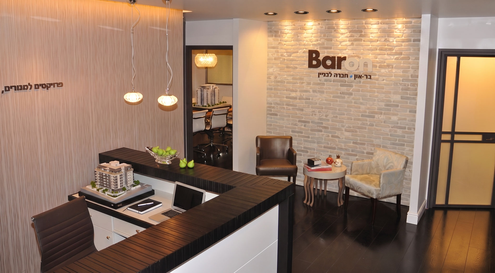
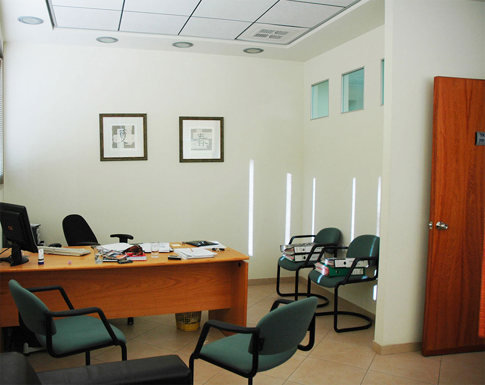
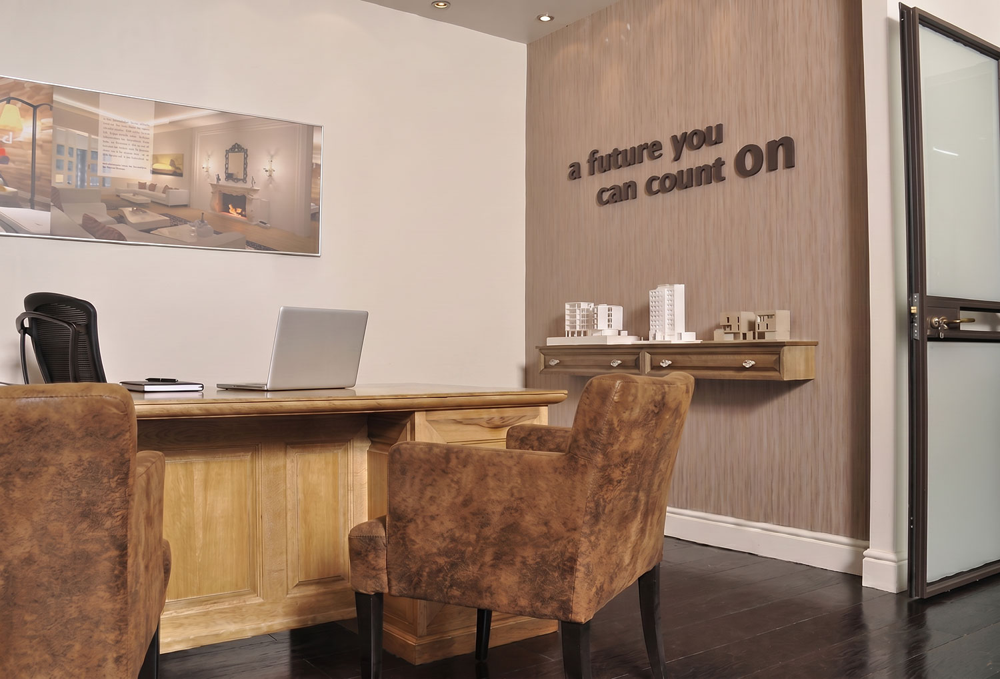
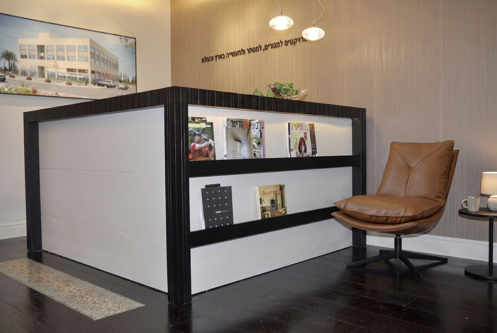
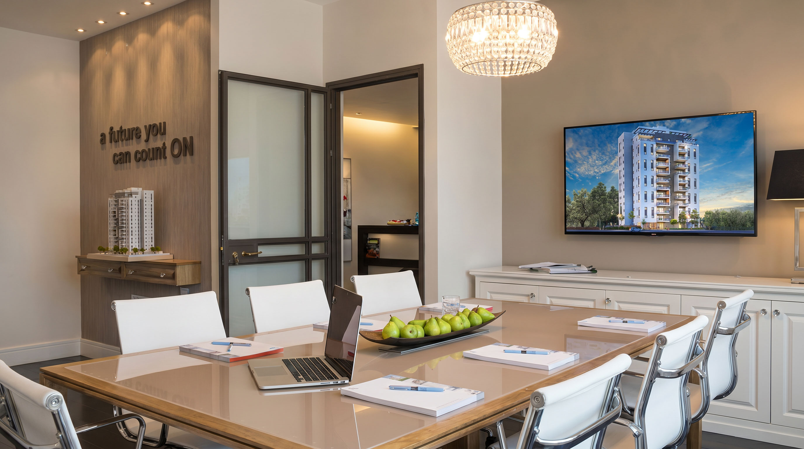
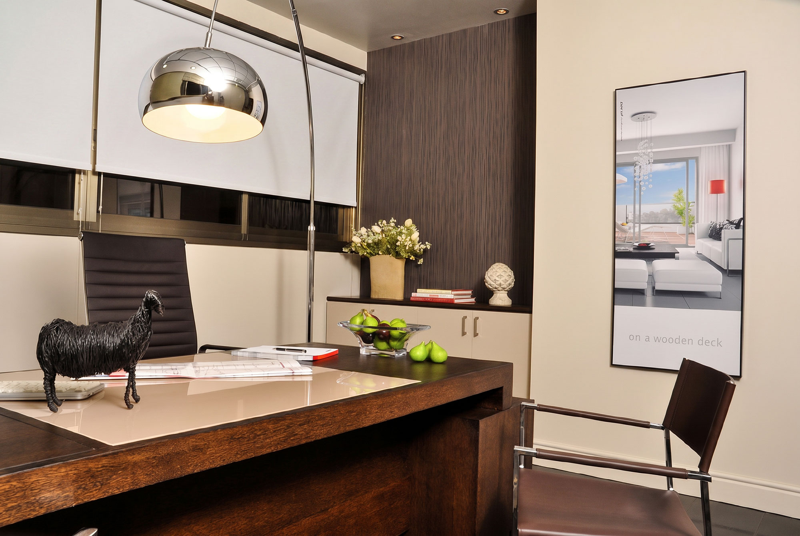
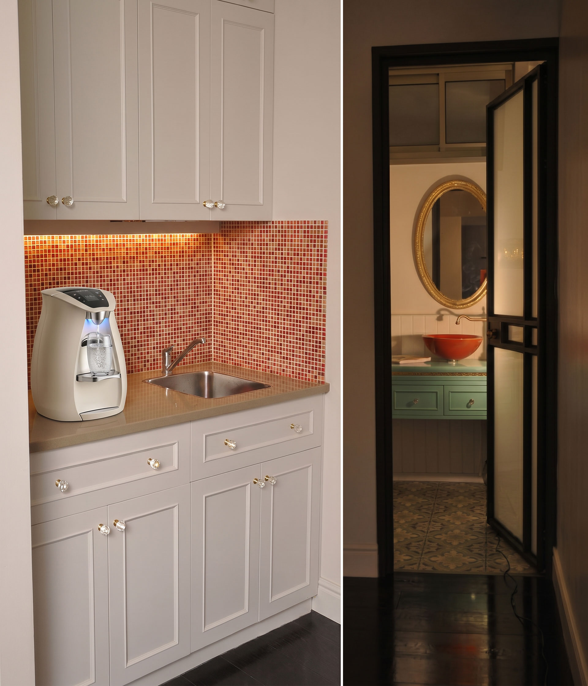
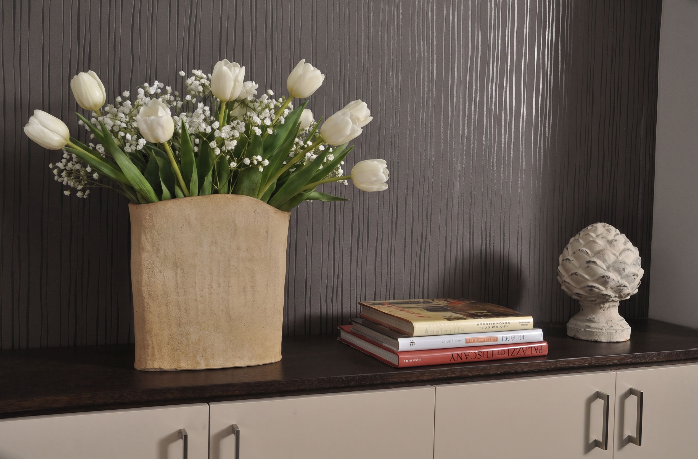

משרד קבלן הוא חלק מחוויית המכירה
משרד של חברה קבלנית הוא לא רק מקום עבודה. זה המקום שבו לקוחות נכנסים, שואלים שאלות, בוחנים תכניות ומתחילים להרגיש האם הם נמצאים בידיים מקצועיות.
כאשר לקוח מגיע למשרד של קבלן או בעל עסק, הוא לא רואה רק חלל יפה. הוא מרגיש כמה האדם שמולו משקיע בנראות, במיתוג, בפרטים ובדרך שבה העסק שלו מוצג כלפי חוץ.
בפרויקט הזה היה חשוב להעביר מסר של ידע בחומרים, פרפקציוניזם, רצינות והשקעה. התת מודע של הלקוח קולט את זה עוד לפני שהוא יודע להסביר לעצמו למה, ושם נוצרת התחושה: עם האדם הזה אני רוצה לעבוד. כך מכירות מתנהלות באמת - דרך רגש, אמון ותחושה מדויקת, בלי שהלקוח ירגיש שמוכרים לו בכוח.
הסיפור של בר און - צמיחה שמתחילה גם בנראות
בר און ישבה בעבר ברחובות, ומשם צמחה לאורך השנים לפרויקטים משמעותיים יותר, כולל פעילות בבת ים ובתל אביב. בעיניי, זה בדיוק הסיפור של עסק עקבי: כשעסק משקיע בנראות, במיתוג, בחוויית הלקוח ובסביבת העבודה שלו, הוא משדר החוצה רצינות, יציבות ושאיפה לגדול.
בתהליך הזה לא היה צורך למחוק הכול ולהתחיל מאפס. בכל משרד ששדרגנו עבדנו חכם עם הקיים: העברנו רהיטים, שיפרנו, הוספנו, דייקנו, שילבנו חומרים ויצרנו שפה חדשה. לפעמים דווקא היכולת לקחת את מה שכבר קיים ולהרים אותו כמה רמות למעלה היא הסוד של תכנון נכון.
חלל שמציג ללקוח חומרים, מרקמים ואיכות בנייה
הרעיון המרכזי במשרד היה להפוך את החלל עצמו לכלי מכירה. לקוחות שמגיעים לקנות בית לא רואים רק משרד - הם פוגשים חומרים, מרקמים ותחושות: קיר לבנים, אריחי פסיפס במטבחון, נגרות לא שגרתית, שילובי צבעים, טפטים, אותיות חתוכות ב-CNC ומודלים של בניינים.
גם הרצפה תוכננה כחלק מהחוויה: פרקט עץ כהה בגימור לקה מבריקה, עם שילוב של אריחים מאוירים שמכניסים עניין, עומק ואופי לחלל. בחדר הישיבות שולבה זכוכית בגוון קפה, ובשולחן המנהלים שולבה זכוכית כחלק מהשפה החומרית.
כל פרט נבחר כדי לאפשר ללקוח להבין דרך העיניים והגוף מה החברה יודעת לייצר: איכות, דיוק, חומריות, תכנון ותחושת בית עוד לפני שהבית נבנה.
אזור קבלה - לפני ואחרי
אזור הכניסה קיבל שפה חדשה: קיר כוח, תאורה חמה, דלפק קבלה, שילוט וחומריות שמייצרת תחושת יציבות כבר מהרגע הראשון.


משרד עבודה וחדר מנהל
גם אזורי העבודה קיבלו אופי חדש: פחות עומס, יותר בהירות, שילוב מודלים אדריכליים ושפה שמדברת את עולם הבנייה והיזמות.


דלפק, חדר ישיבות ומשרד מנהלים
הפרויקט שילב בין נקודות מפגש שונות: דלפק קבלה, חדר ישיבות להצגת פרויקטים ומשרד מנהלים שממשיך את אותה שפה עיצובית.





תשבוחת מהלקוח
“השפעתך הייתה חזקה, רצינית ובלתי מתפשרת. התהליך איתך היה לא קל, אבל את בדרכך לא ויתרת על כלום. בעזרת כוחות שלא ברור מאיפה יש לך, הצלחת להזיז אותי ממקום אחד למקום אחר בכל המובנים, והתוצאות נראות לעין.”
מיכאל בראון, מנכ״ל בר און חברה לבנייןמה היה חשוב בתכנון?
במשרד קבלן, כל פרט משפיע על התחושה של הלקוח: התאורה, הסדר, החומרים, אזור ההמתנה והאופן שבו מציגים את הפרויקטים. התכנון נועד ליצור חלל שמרגיש מקצועי, אבל לא קר. מכובד, אבל לא מנוכר.
העיצוב לא רק נראה יפה. הוא עובד בשביל המכירה, בשביל האמון ובשביל התחושה שהלקוח נמצא במקום שמבין בנייה, תכנון, חומר וביצוע.